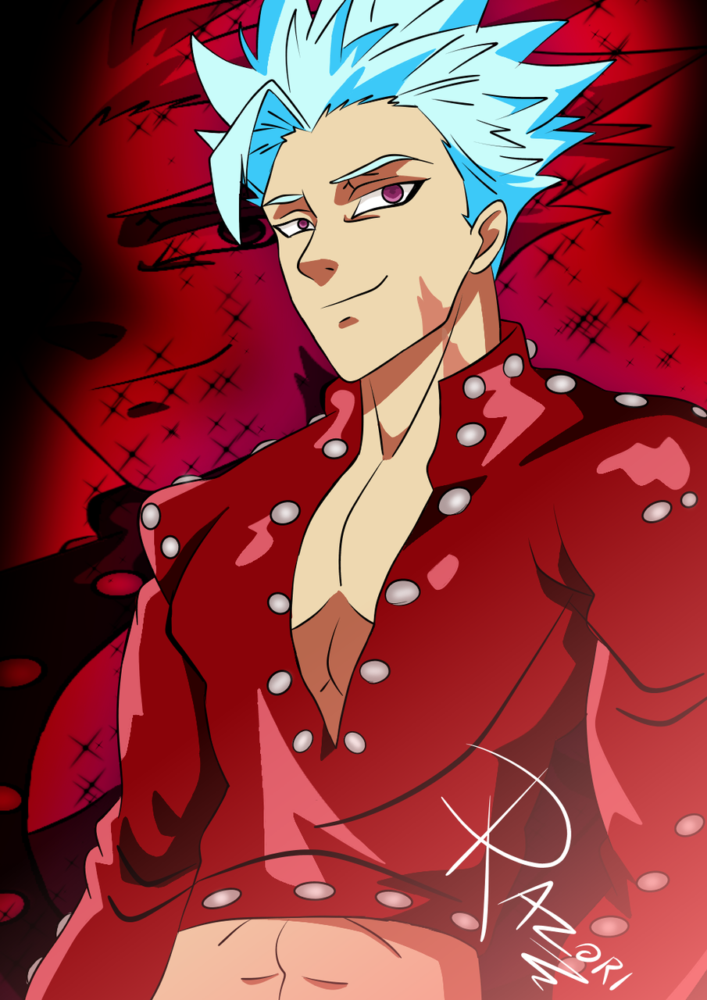

Ban é um dos personagens principais do anime e mangá Nanatsu no Taizai (The Seven Deadly Sins), criado por Nakaba Suzuki. Conhecido como o Pecado da Ganância com o símbolo da Raposa, Ban é um dos membros mais marcantes do grupo. Com uma personalidade despreocupada, mas intensa quando se trata de proteger quem ama, Ban se destaca por sua imortalidade, carisma e força extraordinária.
História
Ban teve uma infância sofrida, sendo abandonado por seus pais e vivendo como um ladrão para sobreviver.
Conheceu Elaine, a guardiã da Fonte da Juventude, por quem se apaixonou. Após a destruição da floresta e
a morte de Elaine, Ban bebeu da fonte e se tornou imortal.
Foi preso injustamente, mas acabou se juntando ao grupo dos Pecados Capitais como o Pecado da Ganância,
por ter “roubado” a imortalidade.
Sua motivação ao longo da série é encontrar uma forma de reviver Elaine e protegê-la.
Habilidades
Imortalidade: Ban não pode morrer de forma natural ou por ferimentos – ele se regenera
rapidamente.
Snatch (Roubo): Habilidade que permite roubar objetos e atributos físicos (como força e
velocidade) dos oponentes.
Agilidade e força sobre-humana: Mesmo sem sua habilidade mágica, Ban é incrivelmente rápido e
forte.
Caçador de Tesouros: É habilidoso em infiltrações, furtos e rastreamentos.
Modo Caçador: Amplifica suas habilidades físicas ao extremo.
Características
Alto, magro, cabelo prateado espetado e olhos vermelhos. Usa geralmente uma roupa vermelha com spikes
metálicos.
Brincalhão, sarcástico e confiante, mas com um lado emocional profundo, especialmente em relação à
Elaine e Meliodas.
Fiel aos seus amigos, especialmente Meliodas. Está disposto a tudo por quem ama.
Curiosidades
Ban é um dos personagens mais populares da série, frequentemente liderando enquetes de popularidade.
Apesar de ser imortal, ele sente dor como qualquer outra pessoa.
Seu nome é inspirado na lenda do “Bandido Ban”, personagem do folclore francês.
Ban tem um olfato extremamente aguçado, comparado ao de um animal selvagem.
Ele perdeu sua imortalidade voluntariamente para reviver Elaine, mostrando sua evolução emocional.